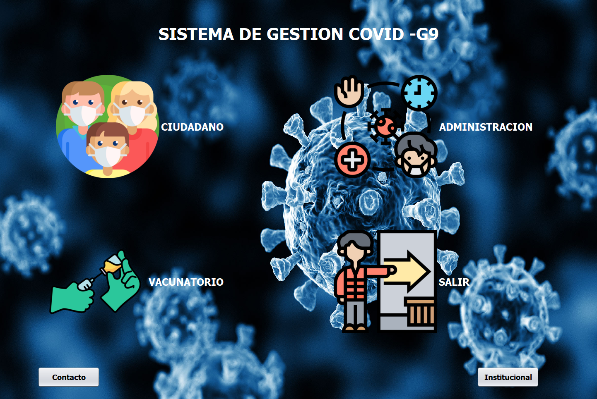
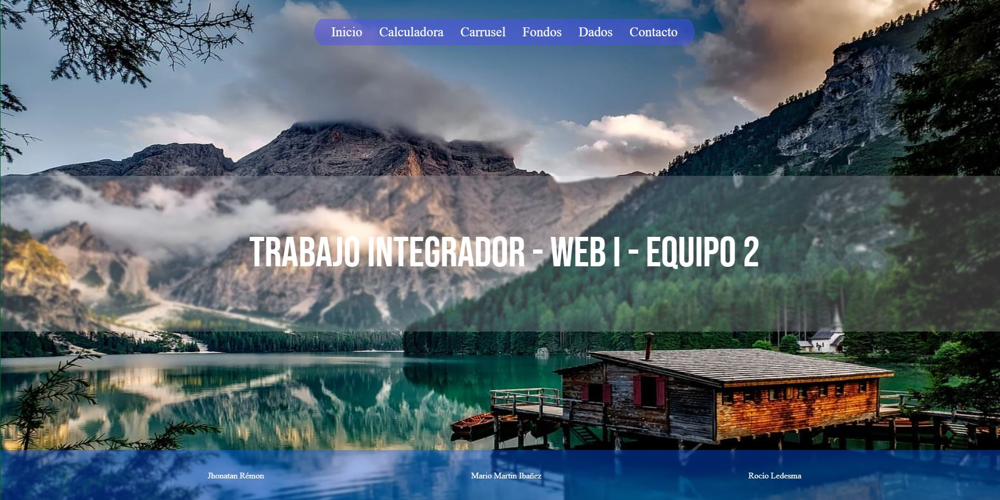

Un estudiante de desarrollo de software en la Universidad Gaston Dachary. He completado el programa 'Argentina Programa 4.0', donde adquirí habilidades en Java y actualmente estoy ampliando mis conocimientos en el programa 'Codo a Codo'.
Además de mis estudios formales, también estoy explorando otros aspectos del desarrollo de software. Tengo conocimientos básicos en HTML, CSS, JavaScript, Git y GitHub, y estoy emocionado por seguir aprendiendo y creciendo en este campo.
Estoy comprometido con mi crecimiento personal y profesional, y siempre estoy buscando oportunidades para mejorar mis habilidades y contribuir al mundo del desarrollo de software.
¡Gracias por visitar mi portfolio y espero poder compartir mi viaje de aprendizaje contigo!

Realizado como proyecto final en el programa 'Argentina Programa 4.0' dictado por la Universidad de la Punta.

Realizado como trabajo integrador en la materia WEB I, para la tecnicatura en desaarrollo de software, dictada por la Universidad Gaston Dachary